📸 flash-attn on Sunspot
Update: 2024-06-16
After an interactive debug session with Intel, the root behavior of the apparent discrepancy was identified.
In particular, we found that the ALCF/Megatron-DeepSpeed repo was NOT explicitly setting the dropout values to 0.0 (and so, was using the default values of 0.1) for both --attention-dropout and --hidden-dropout.
After making this change, the losses were observed to agree, as can be seen below in
{kind=link}
🐛 Impact on Loss [Bug?]
In the q4-drop, it was observed that toggling flash-attn on / off seemed to produce different loss curves (with otherwise identical configs)
shared-config.yaml
This can be seen clearly in the figure below:
{kind=link}
This was identified, and to be addressed in upcoming release.
📦 LLM Framework Release
On 05/14/2024, Intel dropped their new LLM frameworks release:
🎁 frameworks_2024_5_v2 Announcement:
Hi Venkat,
We have shared the official Q2 release in two different forms :
Manual Setup: /gila/Aurora_deployment/anl_24_q2_release.tar.gz
and
Module:
module use -a /home/jmitche1/anl_release/2024/q2
module load frameworks_2024_5_v2
Instructions on how to use modules with Q2 build are anl_24_q2_release/README
- The release includes :
- Megatron-DeepSpeed 0.14.2 (with patch)
- Intel® Extension for PyTorch* v2.1.30+xpu
- TorchCCL 2.1.300
- ONEAPI 2024.1.0.596.PUBLIC_IDP_2024.1.0_723
- Agama driver: 803.29
- The release provides following key features:
- Scaleup Performance improvement from the
TorchCClprototype feature enabled byTORCH_LLM_ALLREDUCE=1details - Auto TP inference support for more workloads
- Flash Attention V2 improvement for 256 head dimension support; MiCS support.
- Latest Features and Optimizations from DeepSpeed 0.14.2 and Intel® Extension for PyTorch* 2.1.30.
- Scaleup Performance improvement from the
Thanks,
Jerome
📸 flash 🤝 📷 no-flash
With this new release, Intel observed that the loss curves agreed exactly for flash / no-flash, using the learning rate settings below:
Testing with Jerome’s new release:
I was able to independently confirm these results, shown in 📸 flash 🤝 📷 no-flash below.
🔗 wandb links:
- [📸
flash] W&B Run: youthful-river-1832 - [📷 no-
flash] W&B Run: earthy-wave-1830
📸 flash vs. 📷 no-flash
{kind=link}
flash 📸 🤝 📷 no-flash🚧 Broken MPI1
For whatever reason, things seemed to have spontaneously broken on the night of 2024-04-14 ??
When trying to run experiments the following day (05/15/2024) I was met with this2:
which was discussed further in this thread on slack.
It seems Subrata also encountered a similar issue [see: slack thread]
✅ mpi4py fix
To resolve this
issue we can simply load the correct modules:
module use -a /home/jmitche1/anl_release/2024/q2
module load frameworks_2024_5_v2
module use /home/ftartagl/graphics-compute-runtime/modulefiles
module load graphics-compute-runtime/agama-ci-devel-803.29
module load spack-pe-gcc/0.6.1-23.275.2 gcc/12.2.0
module use /soft/preview-modulefiles/24.086.0
module load oneapi/release/2024.04.15.001For full details see mpi4py-reproducer, and this [slack thread].
🕵🏻 Framework Comparison
As I was re-building MPI, and after talking to Jerome, I realized that most of the dependencies are already present in the provided frameworks/ modules on Sunspot.
As a simple test, I tried building a new environment built on the base conda environment3 provided by theframeworks/2023.12.15.001 module, which worked without modification and had ) most of what I needed already installed:
>>> import torch
>>> torch.__version__
'2.1.0a0+cxx11.abi'
>>> import intel_extension_for_pytorch as ipex
>>> ipex.__version__
'2.1.10+xpu'
>>> from mpi4py import MPIThe remaining dependencies were installed according to the instructions from the new release frameworks_2024_5_v2.
Details included below.
📦 pip Install Dependencies
Unfortunately, the frameworks/** don’t appear to provide DeepSpeed.
We can create a virtual environment on top of the base conda by
$ module use frameworks/2023.12.15.001
$ export PBS_O_WORKDIR=$(pwd) ; source ALCF/helpers.sh && setup_venv_from_condaOnce the venv has been created and activated, we can install the remaining dependencies:
To build / install DeepSpeed, along with its required dependencies:
intel-extension-for-deepspeed:DeepSpeed:Extras:
Looking around the available modules a bit, I noticed a newer frameworks release (frameworks/2024.04.15.002) that had a newer version of both torch and ipex:
module use /soft/preview-modulefiles/24.086.0
module load frameworks/2024.04.15.002.lua
python3 -c 'from mpi4py import MPI; print(MPI.__file__)'
# /soft/datascience/aurora_nre_models_frameworks-2024.1_preview_u1/lib/python3.9/site-packages/mpi4py/MPI.cpython-39-x86_64-linux-gnu.so>>> import torch
>>> torch.__version__
'2.1.0.post2+cxx11.abi'
>>> import intel_extension_for_pytorch as ipex
>>> ipex.__version__
'2.1.30+xpu'
>>> from mpi4py import MPI; print(MPI.__file__)
/soft/datascience/aurora_nre_models_frameworks-2024.1_preview_u1/lib/python3.9/site-packages/mpi4py/MPI.cpython-39-x86_64-linux-gnu.soThe remaining dependencies were installed identically to what was just done previously for the frameworks/2023.12.15.001 module.
NOTE: In the figures below, we denote these two environments as:
2024.0:module load frameworks/2023.12.15.001
2024.1:module use /soft/preview-modulefiles/24.086.0module load frameworks/2024.04.15.002.lua
anl_24_q2_release:eval "$(~/miniconda3/bin/conda shell.zsh hook)"conda activate anl_24_q2_release
🥸 Fix in Disguise
Armed now with functional environment(s) for argonne-lcf/Megatron-DeepSpeed, I was able to resume my previous experiments.
From the discussion with Intel, it was hard to understand / reason about why the flash-attn fix would have any dependence on the learning rate schedule (warmup + decay).
If the flash-attn fix works for a particular learning rate schedule, you would reasonably expect that it should work for any learning rate schedule.
An additional source of confusion for me was that the discrepancy in the loss curves (seemingly) disappeared when using the learning rate settings provided by Intel4, but not when using the ALCF defaults5.
After thinking about it for a bit and trying to reason about possible causes, I wondered if it might not be a mix of multiple different factors:
- Small learning rate
- Very long decay
- [maybe ?] somehow dependent on the learning rate warmup fraction
- preliminary experiments seemed to suggest this was not the case
So, I was curious what would happen if I used the (larger) learning rate value from the ALCF defaults (lr=0.003) with the very long lr-decay-iters: 320000 from Intel.
These results are shown below.
In particular, for all three experiments the following learning rate settings were used:
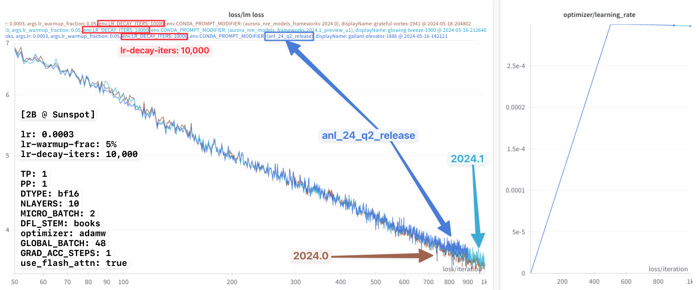 Looking at this figure ^, it appears that up until the very very end, all three loss curves agree identically.
However, if we look closely at the very end, it looks like there might be a slight difference beginning to appear between the 2024.0 (brown line) and {anl_24_q2_release, 2024.1} ({dark, light} blue lines, respectively).
Thinking that I might be onto something, I then tried again with a smaller lr-decay-iters: 5000.
This result is shown below:
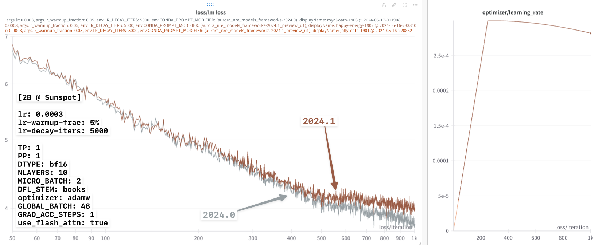 In particular, we can now more clearly see the difference beginning to appear between the 2024.0 and 2024.1 loss curves.
Continuing on, we see this effect become increasingly dramatic with even smaller values of lr-decay-iters:
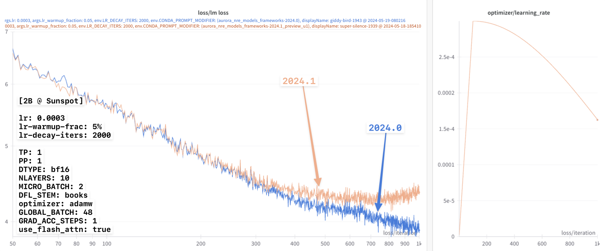 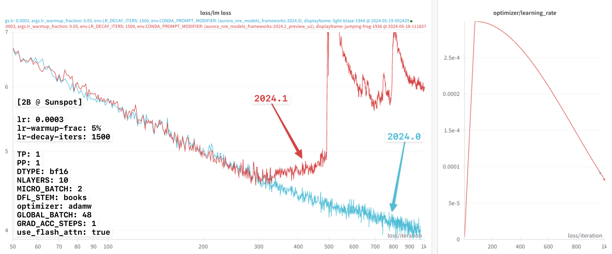
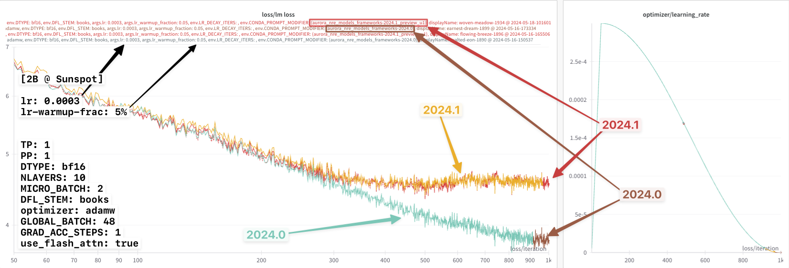 In each of these experiments, it appears that:
2024.0:- Not impacted by this
lr-decay-itersdependence - Continue to decrease for the duration of training
- Not impacted by this
2024.1:- Impacted by the
lr-decay-itersdependence - Plateaus towards the end of training
- Impacted by the
Older Figs
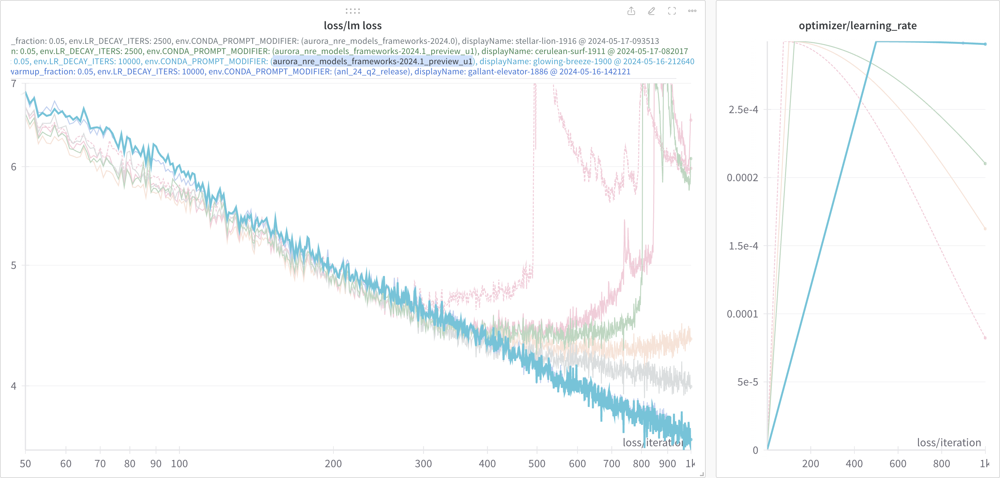 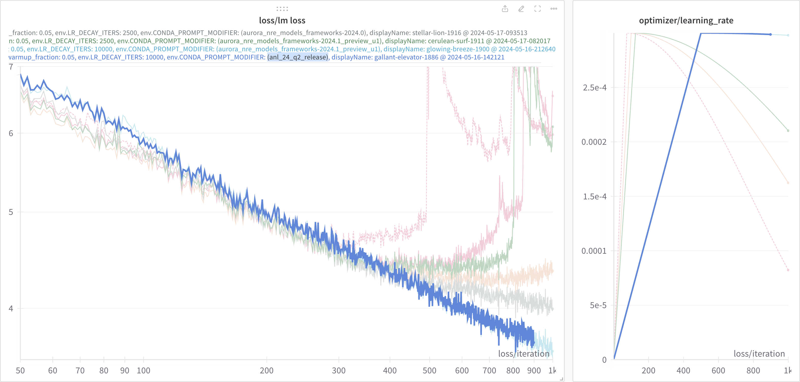
✅ 2024.0 Fix
Everything seems to work with
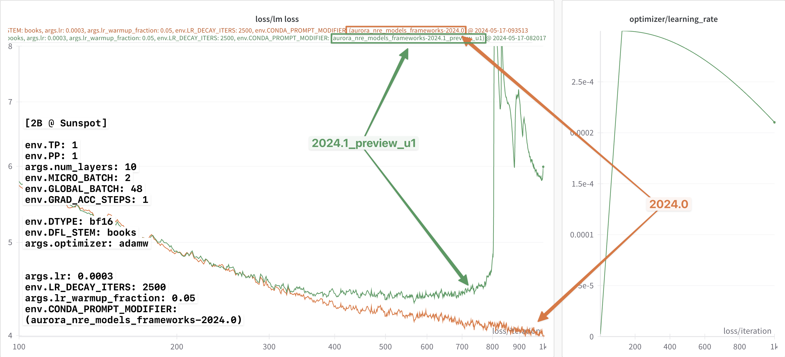 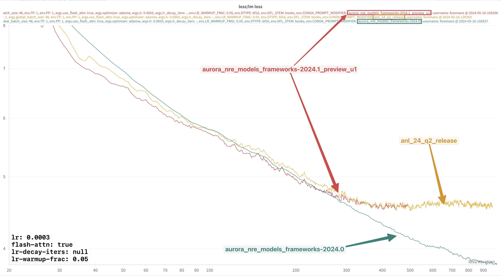
📊 lr-decay-iters Comparison
2024.0:- 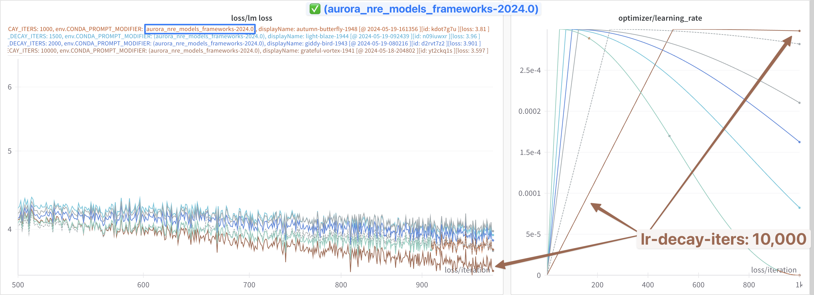
2024.1:- 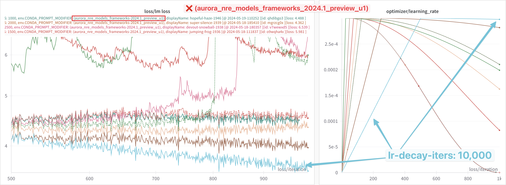
📈 lr-decay-iters dependence
{kind=link}
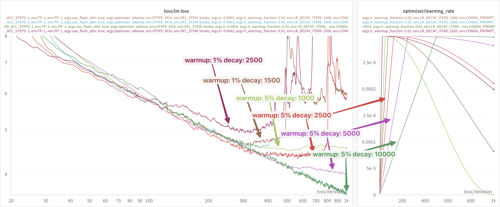 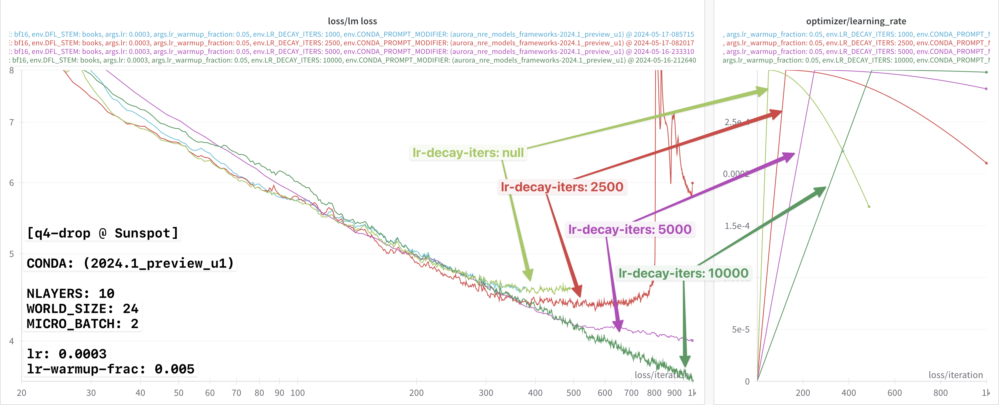
🏎️ Performance Improvement in 2024.1
{kind=link}
{kind=link}
Footnotes
https://github.com/pmodels/mpich/pull/7001↩︎
Explicitly,
aurora_nre_models_frameworks-2024.0, abbreviated as2024.0↩︎Intel used the following learning rate schedule in their experiments
yml lr: 0.00015 lr-warmup-frac: 0.01 lr-decay-iters: 320000↩︎ALCF used the following learning rate schedule in their experiments↩︎
Citation
@online{foreman2024,
author = {Foreman, Sam},
title = {📸 `Flash-Attn` on {Sunspot}},
date = {2024-06-17},
url = {https://samforeman.me/posts/AuroraGPT/flash-attn-sunspot/},
langid = {en}
}